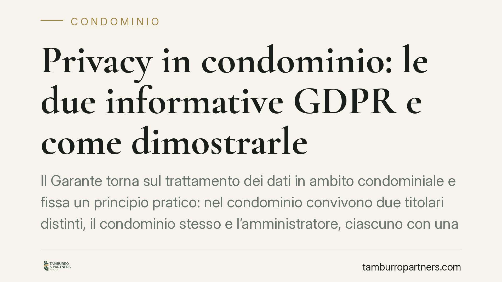

Privacy in condominio: le due informative GDPR e come dimostrarle
Il Garante torna sul trattamento dei dati in ambito condominiale e fissa un principio pratico: nel condominio convivono due titolari distinti, il condominio stesso e l'amministratore, ciascuno con una propria informativa privacy. Non basta redigerle: occorre poter dimostrare di averle effettivamente rese ai condomini. Un tema che tocca la responsabilità dell'amministratore e la gestione documentale dello stabile.

Il fatto
Il Garante per la protezione dei dati personali è intervenuto per chiarire un dubbio ricorrente nella gestione condominiale: chi deve rendere l'informativa privacy ai condomini e come si prova di averlo fatto.
La risposta ruota attorno a un punto tecnico spesso trascurato. In condominio non esiste un unico soggetto che decide come e perché trattare i dati personali, ma due centri di imputazione distinti. Da qui derivano obblighi separati e, soprattutto, un onere documentale che pesa in prima battuta sull'amministratore.
Inquadramento normativo
La nozione chiave è quella di titolare del trattamento, definita dall'art. 4, par. 1, n. 7 del Regolamento UE 2016/679 (GDPR) come il soggetto che, singolarmente o insieme ad altri, determina le finalità e i mezzi del trattamento dei dati personali. In parole semplici: chi decide quali dati raccogliere, per quale scopo e con quali strumenti.
Il Garante individua due titolari autonomi:
- Il condominio, come ente di gestione, è titolare per i trattamenti connessi alla vita dello stabile: anagrafe condominiale (art. 1130, n. 6, c.c.), ripartizione delle spese, gestione delle parti comuni, videosorveglianza deliberata dall'assemblea.
- L'amministratore è titolare autonomo per i trattamenti che svolge nell'esercizio della propria attività professionale, ad esempio la gestione dei rapporti con i fornitori o gli adempimenti fiscali e contabili legati al proprio ruolo.
Da questa distinzione discende che le informative devono essere due e distinte, ciascuna riferita al proprio ambito di trattamento. Un'unica informativa generica non soddisfa il principio di trasparenza previsto dagli artt. 12, 13 e 14 GDPR.
Perché non basta redigere l'informativa
Il passaggio più rilevante riguarda la prova. Il GDPR è costruito sul principio di accountability (art. 5, par. 2): il titolare non deve solo rispettare le regole, ma deve essere in grado di dimostrarlo.
Nella pratica significa che, in caso di reclamo o contestazione, non è sufficiente esibire il documento dell'informativa. Occorre provare che quell'informativa è stata effettivamente messa a disposizione dei condomini. La semplice esistenza del file, magari archiviato nel gestionale, non equivale ad averlo reso.
La dimostrazione può assumere forme diverse: pubblicazione stabile in un'area accessibile ai condomini, allegazione ai documenti assembleari, invio tracciabile via PEC o email, consegna con ricevuta. Ciò che conta è che resti una traccia verificabile.
Implicazioni pratiche per l'amministratore
Per l'amministratore la questione non è formale. La mancata o inadeguata informativa lo espone a un duplice fronte: la responsabilità come titolare del proprio trattamento e la responsabilità nella gestione del condominio, che potrebbe tradursi in contestazioni da parte dell'assemblea.
Il reclamo di un singolo condomino al Garante può innescare un'istruttoria in cui l'onere di provare la conformità ricade sul titolare. Chi non conserva evidenza di aver reso le informative parte da una posizione difensiva debole, a prescindere dalla correttezza sostanziale del trattamento.
Per i condomini, invece, la conseguenza pratica è il diritto a ricevere informazioni chiare su chi tratta i loro dati e per quali finalità, con la possibilità di esercitare i diritti previsti dagli artt. 15 e seguenti del GDPR (accesso, rettifica, cancellazione nei limiti di legge).
Cosa fare in concreto
- Predisponi due informative separate: una per i trattamenti del condominio come ente, una per i trattamenti propri dell'amministratore. Evita documenti unici e generici.
- Rendi le informative in modo tracciabile: allega ai verbali assembleari, pubblica in area riservata, invia via PEC o email con conferma. Conserva ogni ricevuta.
- Archivia le prove di messa a disposizione per l'intera durata dell'incarico e oltre, così da poter rispondere a eventuali richieste del Garante.
- Aggiorna le informative ogni volta che cambiano le finalità del trattamento, ad esempio con l'installazione di un impianto di videosorveglianza deliberato dall'assemblea.
- Verifica la coerenza tra quanto dichiarato nell'informativa e i trattamenti effettivamente svolti: un'informativa disallineata dalla prassi è essa stessa una violazione.
La gestione della privacy condominiale è un tema tecnico che richiede attenzione documentale continua. Consigliamo di sottoporre le informative in uso a una revisione periodica e di formalizzare le procedure di consegna.
---
Contributo informativo a cura di Tamburro & Partners - Avv. Giuseppe Tamburro. Non costituisce parere legale.
Ogni condominio ha una storia a sé.
Se gestisci un'amministrazione e vuoi un confronto su una specifica questione condominiale, scrivi allo studio. Ti rispondiamo entro un giorno lavorativo.